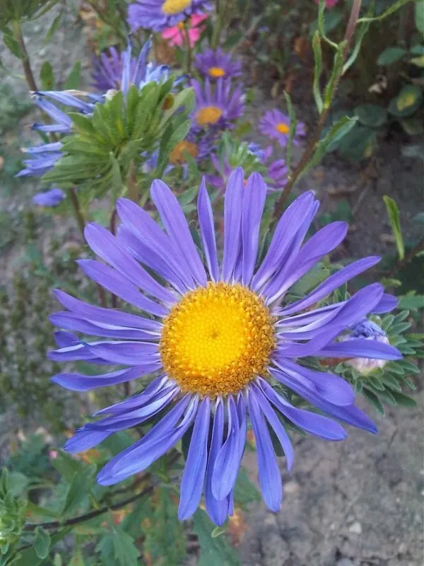

花卉与草本 · 植物界
翠菊 Callistephus chinensis

菊科一年生草本，花大色艳、花色丰富，是中国原产的花卉，常用于花坛和切花，别名江西腊，也是世界著名的花坛花卉之一。
- 分类
- 门被子植物门纲木兰纲目菊目科菊科属翠菊属
- 栖息环境
- 中国的山坡草地与林缘，喜凉爽、阳光充足
- 地理分布
- 原产中国，朝鲜半岛、日本也有分布，世界温带地区广泛栽培
- 保护级别
- 暂无评估
物种志
翠菊为菊科翠菊属一年生草本，株高 30–80 厘米，茎直立，全株被白色糙毛。叶片卵形至长椭圆形，边缘有粗锯齿。头状花序单生茎顶，直径 5–10 厘米，有单瓣、重瓣之分，花色有蓝紫、紫红、粉、白等，花期 7–10 月；果实为瘦果。
翠菊原产中国，是该属唯一的物种，朝鲜半岛和日本也有分布，喜凉爽、阳光充足和排水良好的环境，不耐酷热和积水。它花型丰满、花色明快，是花坛、花境和切花的常用材料，重瓣品种尤其受欢迎。翠菊在中国栽培历史悠久，别名“江西腊”；栽培以春播为主，注意轮作，避免连作导致枯萎病；高秆品种可作切花，矮生品种适合花坛边缘。
形态与习性
- 株高30–80 厘米，全株被糙毛
- 花期7–10 月，单株花期约 1 个月
- 果期花后结瘦果
- 光照喜充足阳光
- 水分喜湿润，忌积水
- 土壤疏松肥沃、排水良好的壤土
- 繁殖以播种为主
- 主要用途花坛、花境、切花
趣味知识
- 翠菊属只有翠菊一个物种，是原产中国的单种属植物。
- 它的花色有蓝紫、紫红、粉、白等，重瓣品种花形丰满。
- 翠菊别名“江西腊”，在中国已有悠久的栽培历史。
- 翠菊忌连作，同一地块连续种植容易发生枯萎病。